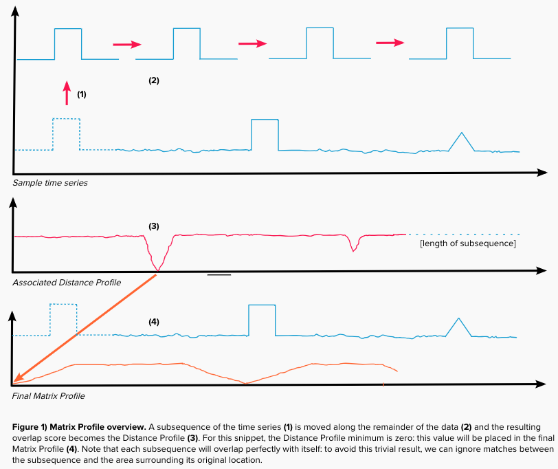

Introducing matrixprofile-ts A Python Library for Detecting Patterns and Anomalies in Massive Datasets
By Andrew Van Benschoten Dec 11, 2018
Time series data is everywhere. From finance to IT to marketing, many companies produce a myriad of metrics from which they hope to extract valuable insights. Within Target, our team collects hundreds of thousands of time series from across the business and monitors them for anomalous events. At the same time, we’re interested in discovering temporal patterns of behavior. How do milk sales vary throughout the week? Does our Kubernetes cluster follow a common auto-scaling pattern? This poses a ignificant challenge: Each of our metrics can be vastly different, whether through seasonality, trends or overall level.
At the same time, our massive data footprint prevents us from building highly custom models with many hyper parameters for each metric. We paradoxically need an algorithm with few parameters that can be implemented at scale and handle a wide range of time-dependent behaviors.
While there will never be a mathematical silver bullet, we’ve discovered that the Matrix Profile, a novel algorithm developed by the Keogh research group at UC-Riverside, is a powerful tool to help solve the dual problems of anomaly detection and pattern (or “motif”) discovery. Matrix Profile is robust, scalable and largely parameter-free; we’ve seen it work for a vast range of metrics, including website user data, order volume and other business-critical applications.
The basics of Matrix Profile are simple: If I take a snippet of my data and slide it along the rest of the time series, what is the resulting overlap at each position? More specifically, we can evaluate the Euclidian distance between a subsequence and every possible time series segment of the same length, building up what’s known as the subsequences “Distance Profile.” If the subsequence repeats itself in the data, there will be at least one match and the minimum Euclidean distance will be zero, or close to zero in the presence of noise.
In contrast, if the subsequence is highly unique (say it contains a significant outlier), the match will be poor and all overlap scores will be high. Note that the type of data is irrelevant: We’re only looking at pattern conservation. We then slide every possible snippet across the time series, building up a collection of Distance Profiles. By taking the minimum value for each time step across all distance profiles, we can build the final Matrix Profile.
Both ends of the Matrix Profile value spectrum are useful. High values indicate uncommon patterns, or anomalous events; in contrast, low values highlight repeatable motifs and provide valuable insight into your time series of interest. I’ve only provided a basic overview, so interested readers are encouraged to investigate the relevant academic papers.
Our favorite aspect of Matrix Profile is its speed. This primarily stems from utilization of the Fast Fourier Transform in calculating Euclidean distances, but the algorithm can also be parallelized for deployment on GPU hardware. Additionally, we’ve seen that the Matrix Profile rapidly converges to a final solution: If further speed-up is desired, random sampling and processing of only 20 percent of the available data leads to very similar outcomes. Astonishingly, we can process 20 years’ worth of data, sampled every five minutes, in less than 20 seconds. This speed is critical, as we expect that our data streams will expand in size by several orders of magnitude.
As Target continues to expand its digital footprint through sales growth, an increased online presence and advanced logistics, Matrix Profile will help us be ready for the continued exponential growth of Big Data. To better harness the power of this algorithm, we’ve created a Python package called matrixprofile-ts and open-sourced the code on GitHub.
As Matrix Profile is only a few years old, we anticipate continued development and plan to update this library accordingly; we gladly welcome both community feedback and development assistance! We also desire to educate the data science community about this technique through a growing collection of Jupyter Notebook tutorials. Open-source tools form the backbone of modern analytics, and we hope this implementation serves other users as effectively as it has served us.